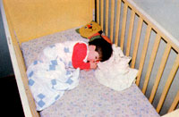
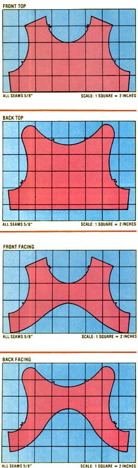

With a few remnants and a little old-fashioned ingenuity, you can help your child stay warm this winter in a...
Like many of MOTHER's readers, my husband and I try to conserve energy by using so-called "alternative" methods to heat our home. A while back we installed a large heat grabber (built from MOM's plans) and a small woodburning stove . . . and, in combination, the two devices go a long way toward keeping our home toasty in daylight hours.
But at night (when the solar heater is "off duty"), the house can still get a mite nippy. So we were faced with the problem of finding an economical way to sleep comfortably during those times when the cold midwinter night air works its way into our house.
Of course, the big folks in the family were able to simply pull on lots of warm comforters. But I needed to come up with a way to keep our youngest son, Andy, securely snuggled. Because-with the exception of his tattered but beloved "Blankey", which adequately warms only his cheek (and heart)-the lad doesn't hold much fondness for blankets, and always used to kick off any covers during the course of the night.
Andy does wear some heavy, commercially made pajamas (the piece of clothing is called a blanket sleeper), but the "nightsuit" isn't warm enough to ward off the chilly temperatures common to the Midwest. So I came up with the idea of fashioning Andy's own private sleeping bag from an old quilt . . . a "cover" that would remain snugly on him with the aid of shoulder fasteners, and yet would be roomy enough to accommodate the boy, his heavy pj's, and "Blankey".
The sleeper sack worked very well, and was so easy to make that I decided to share my pattern and instructions to help other folks' youngsters stay cozy during the long, cold winter. You'll need to locate an old discarded quilt or blanket and a cotton fabric scrap (measuring 16" X 22") . . . and you can probably finish the project in less than two hours!
Begin by cutting two rectangles (mine were 23" X 40") from the old bedcover. (To determine the exact size for your tiny tot, measure him or her from shoulder to shoulder and from shoulder to toe ... then add another foot or so to each dimension to allow for "kick and grow" room.)
Next, pin the "front top" pattern to one end of a blanket rectangle, and attach the "back top" form (both of them will have to be redrawn to size, of course) to the other piece of bedding. Draw a line connecting the outer corners of each pattern to the corresponding bottom corners of the rectangles, and cut out the front and back of your sleeper-to-be.
Once that's done, use the lightweight cotton scraps (and the patterns shown) to make the facings. Then, with the right sides of the material touching each other, sew the front and back facings together at the side seams . . . press open the seams ...turn the long, unnotched edge under 1/4 inch . . . and stitch that edge down.
Again, with the right sides of the "blanket" pieces together, sew the sides and bottom of the bag. Press open the side seams . . . and then turn the sleeper right side out. Pin the facing onto the top of the sack (with the right sides of the fabric touching) and sew. Then trim the seam so that it measures 1/4 inch, and clip the curves. Now, turn the facing to the inside of the garment, press again, and tack it down at the side seams.
Finally, you'll want to attach fasteners at the shoulders. I used heavy-duty snaps; but you may prefer buttons. (I've found that snaps are easier to handle, especially when putting the bag on a sleeping child.)
With the completed sack fitted over his pajamas, Andy slumbers in cozy comfort. And that means we can all sleep better . . . and enjoy healthful air (and fuel savings, to boot)!
|
 |
 |
|